Selected work
Ten projects across the ways I work — analysing cities, designing them, researching how they are lived in, and building tools that act on the data. Grouped by practice; strongest first.
Design
01 — Nuova Porta Genova
Masterplan · Milan · 2026Linear Flow: from infrastructure to urban commons.
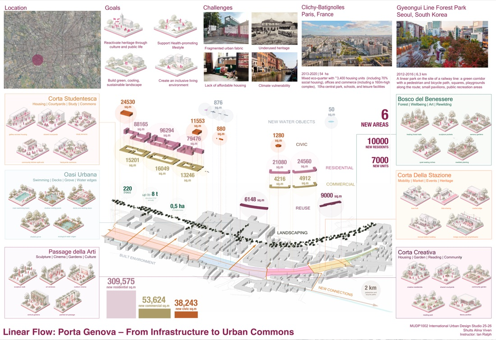
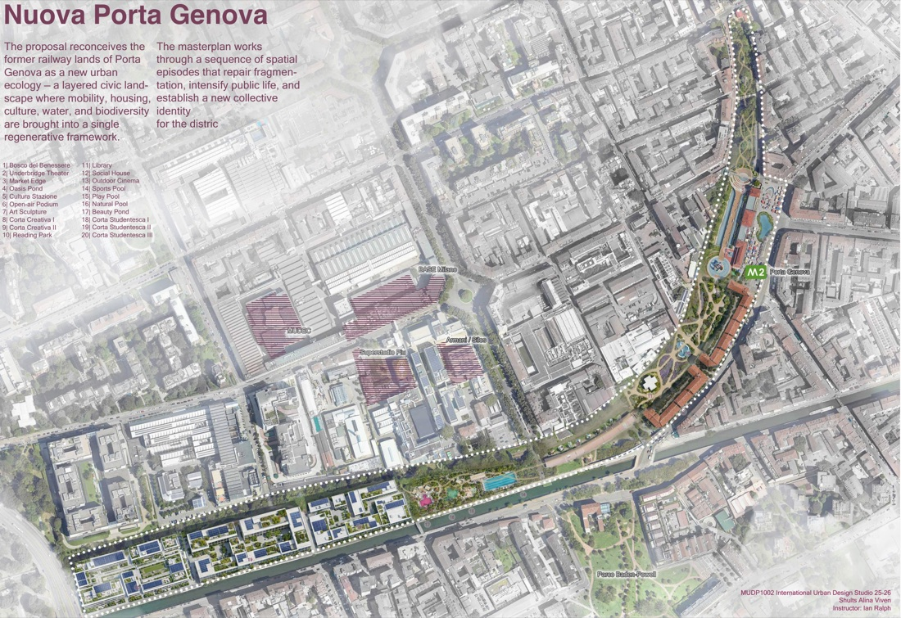
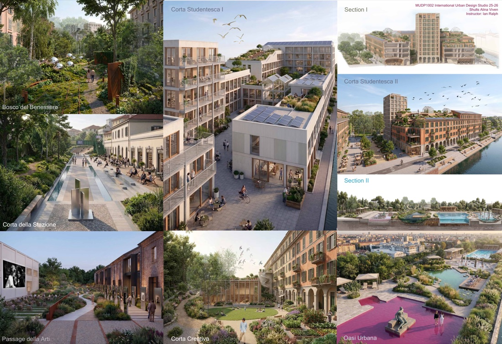
01 · Challenge
The former railway lands of Porta Genova cut a hard fragment through the city. The question: could that scar become a continuous civic landscape — mobility, housing, culture, water, and biodiversity in one regenerative framework?
02 · Context
International Urban Design Studio (HKU, MUDP1002), Milan — Semester II 2026. Instructor: Ian Ralph. Tools: QGIS · Rhino · Adobe.
03 · Analysis
I built an Urban Green Index on census and European SPOTTED-portal data, mapping the area's green gap, heat-wave risk, working-class housing, property prices, flooding, and productive heritage across regional, city, and district scales.
04 · Design
The analysis resolved into six new districts — Corta Studentesca, Oasi Urbana, Passage della Arti, Bosco del Benessere, Corta della Stazione, Corta Creativa — and twenty spatial episodes that stitch the corridor back into the surrounding fabric.
05 · Outcomes
- +10,000new residents
- 7,000new homes
- 309,575 m²residential
- 53,624 m²commercial
- 38,243 m²civic
- 6 / 20districts / episodes
06 · Reflection
I let the evidence pick the moves — a green-index analysis became a six-district masterplan, not the other way round.
02 — Pokfulam Waterfront
Masterplan · Hong Kong · 2025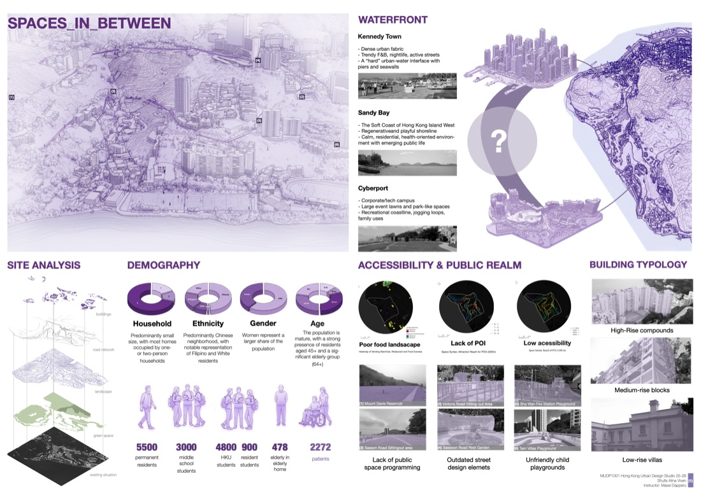
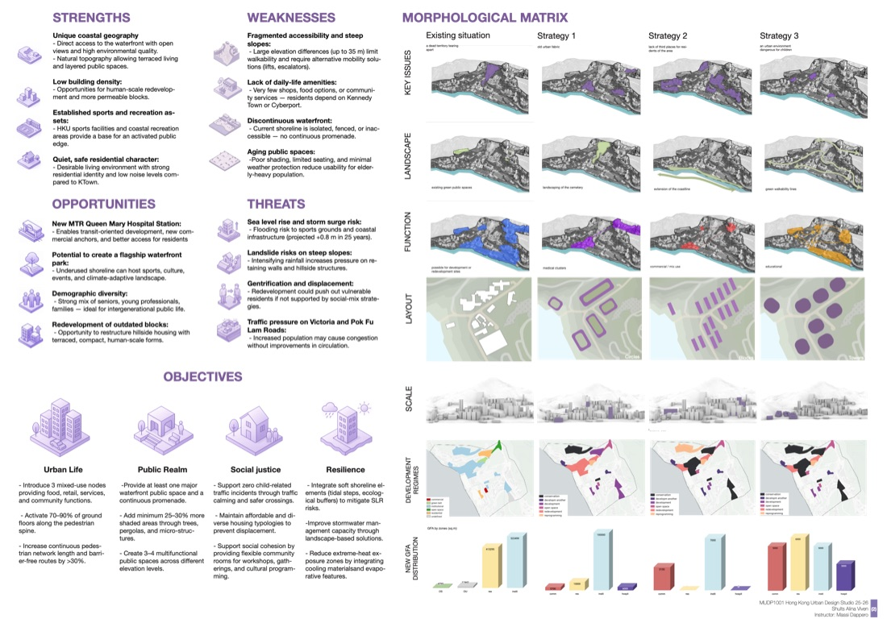
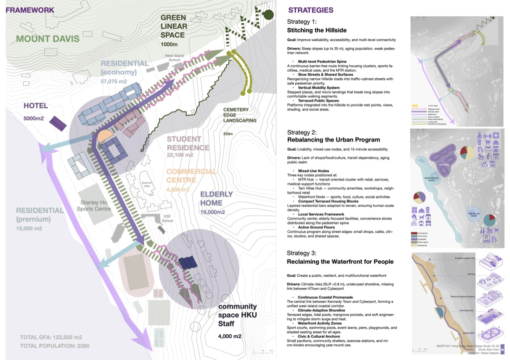
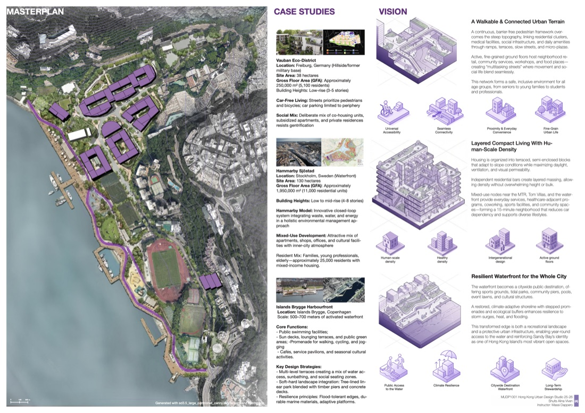
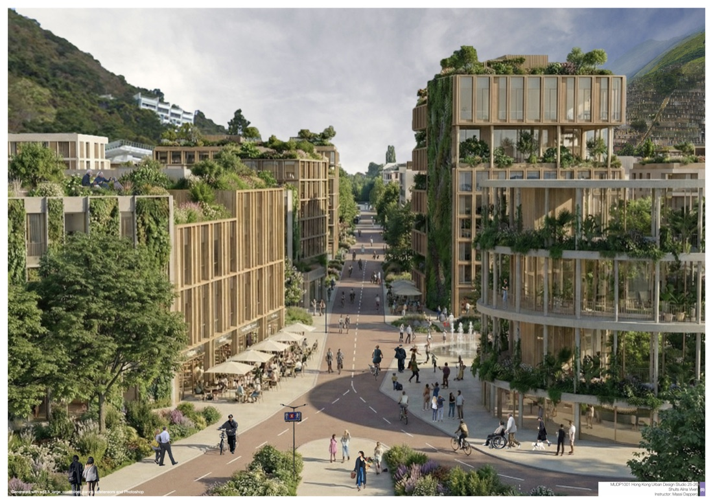
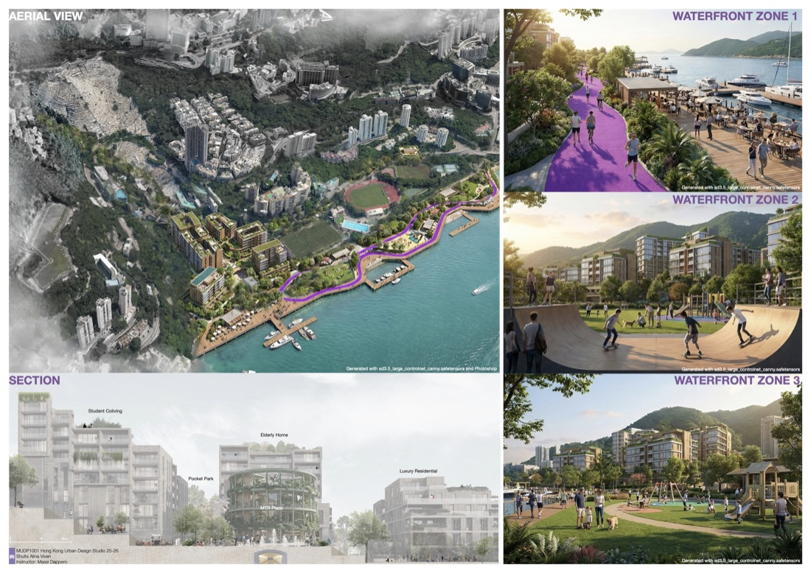
A waterfront redevelopment masterplan for Pokfulam on Hong Kong Island — opening a continuous public waterfront and weaving student co-living, elderly housing, pocket parks, and residential blocks into the steep coastal slope. A single green-blue promenade threads three activated waterfront zones, with terraced, planted architecture that steps down with the hillside.
Analyse
03 — Urban Heat Island, Hong Kong
Health impact assessment · 2024A health-impact assessment built end-to-end from satellite remote sensing.
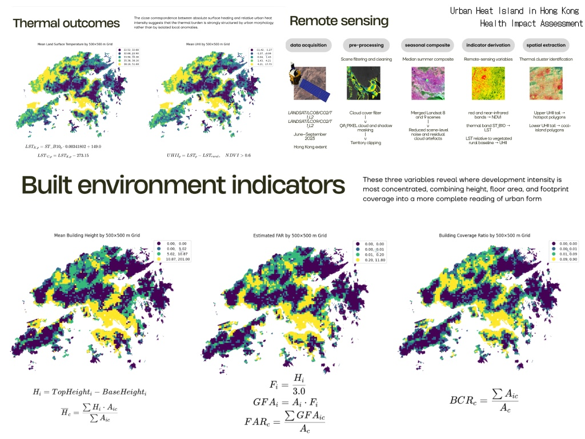
A health-impact assessment of Hong Kong's urban heat island, built end-to-end from satellite remote sensing. Using summer Landsat 8/9 imagery (C02/T1 L2, Jun–Sep 2023), the analysis derives land-surface temperature and Urban Heat Island Intensity on a 500×500 m grid, then links the thermal burden to built-environment indicators — mean building height, floor-area ratio, and building coverage — showing where heat risk is structured by urban form rather than isolated hotspots.
04 — Space Syntax, Manila
Spatial analysis · 2025Informal settlements across 2004, 2014, and 2025.
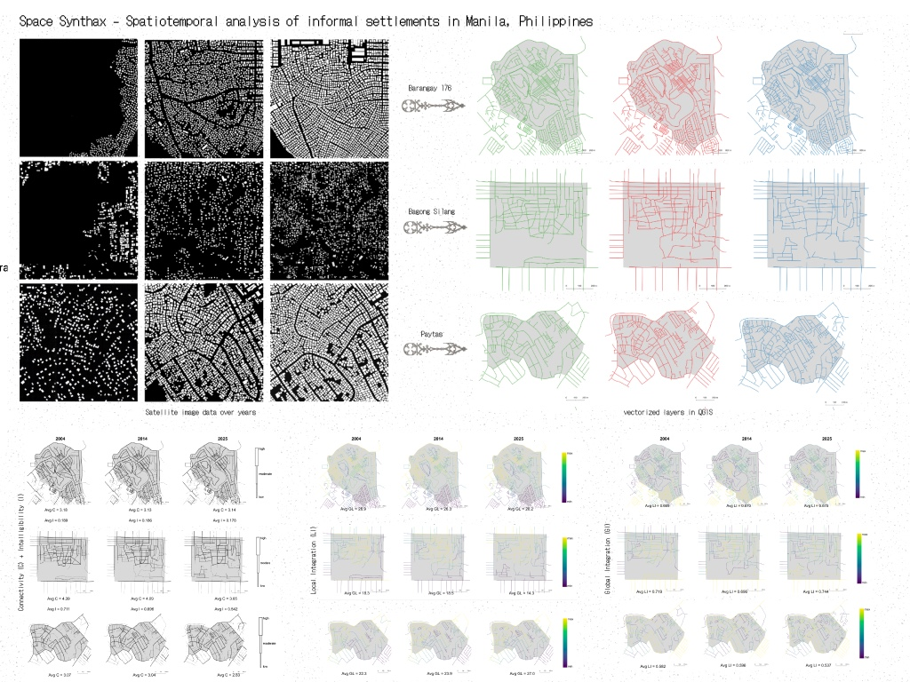
A spatiotemporal space-syntax study of three of Manila's informal settlements — Barangay 176, Bagong Silang, and Payatas — across 2004, 2014, and 2025. Satellite imagery is vectorized in QGIS and analysed for connectivity, intelligibility, and local and global integration, tracing how the structure and legibility of informal urban fabric shift over two decades.
Place identity
05 — Spatial Branding
Place identity · 2023Staraya Ladoga & Khabarovsk.
Place-identity systems for two Russian territories. 'Staraya Ladoga — a fragment of antiquity' builds a heritage identity from Russian ornament and the legacy of Nicholas Roerich. 'Khabarovsk — Heart of the Far East' is a complete visual system — custom typography, a distinctive palette, and a coat-of-arms mark — applied across transit stops, billboards, and posters.
Build
06 — Tochka
Spatial-AI product · 2025An AI agent for location networks.
Upload your branches and ATMs; in minutes Tochka returns a ranked storymap of where to open, close, or relocate — built natively on Hong Kong's open spatial data (CSDI), so leadership decides without waiting weeks for a consultancy.
07 — SiteSense
Spatial-AI product · 2025A generative urban copilot.
Ask a question in plain language; SiteSense returns a live, dynamic map-storymap — pulling OpenStreetMap data via the Overpass API and weaving maps, metrics, and narrative into a single answer.
Interactive & web
08 — Basquiat StoryMap
Storymap · New York · 2025A scrollable Mapbox storymap of Jean-Michel Basquiat's New York.
Locations, works, and biography are bound to the map — the view flies between sites across the city as you scroll through the story.
09 — From Garden Tradition to Public Feeling
Research · Britain · 2025An interactive research piece on British gardens and how they are felt today.
It moves from the history of garden design to a data-driven "emotional atlas" — public evaluation of gardens, the emotional structure behind it, charts, and a map.
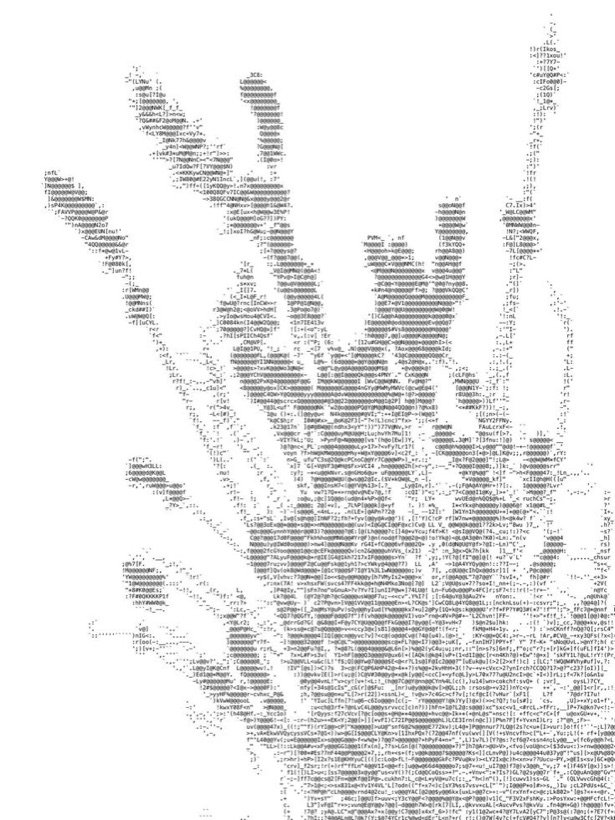
10 — SoHo Street-View Imagery
Spatial analysis · New York · 2025An interactive street-view-imagery sitemap of SoHo, New York.
Google Street View sampled across the district and mapped to read the visual and green character of the streetscape — part of an HKU MUD street-view study.
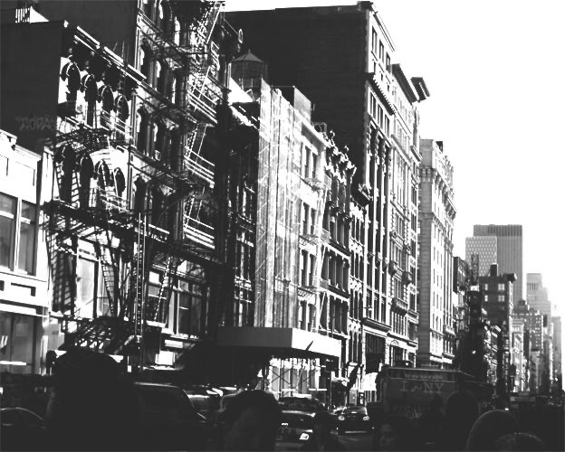
Let's build something for cities.
Open to collaborations, talks, and publications — based in Hong Kong.